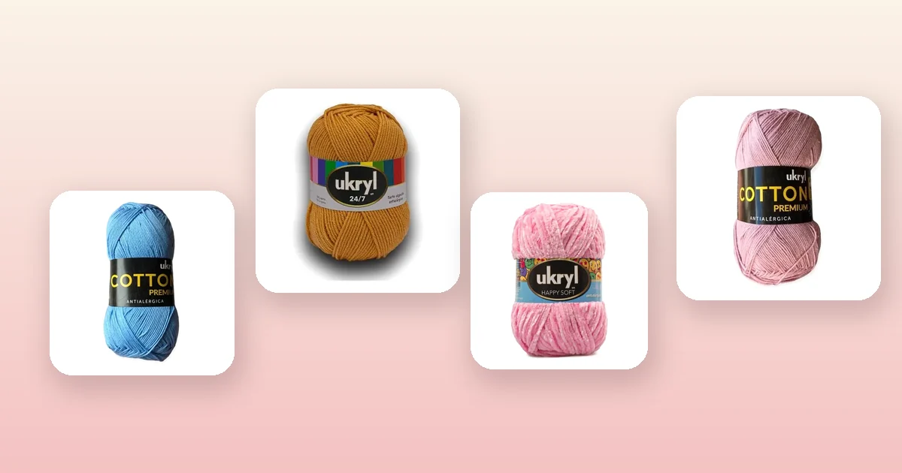

Proyectos de crochet
Cómo tejer una funda de cojín a crochet paso a paso
Las fundas de cojín tejidas a crochet transforman cualquier sillón: dan calidez, textura y ese toque hecho a mano que no se compra en tienda. Lo mejor es que son un proyecto rápido, ideal para principiantes que ya dominan la cadena y el punto alto. En esta guía tienes las medidas estándar, el paso a paso completo con cierre de botones o solapa, cuántos ovillos necesitas y qué hilo o lana elegir.

Materiales para tejer tu funda de cojín
Una funda de cojín a crochet es uno de los proyectos de decoración más accesibles: usa poca lana, se teje en pocos días y el resultado se nota de inmediato en tu living. Antes de empezar, junta estos materiales:
- Entre 2 y 4 ovillos de 100 g, dependiendo del tamaño del cojín y del grosor de la lana. Más abajo tienes la tabla exacta por línea de hilo.
- Un ganchillo acorde al hilo: 3,5 a 4,5 mm para hilos de algodón, 5 a 6 mm para lanas de grosor medio y 6 a 8 mm para lana chenille o gruesa. Si no sabes cuál usar, revisa nuestra guía de qué aguja o ganchillo usar para tejer.
- Aguja lanera, tijeras y cinta métrica.
- Botones grandes (2 a 4 unidades) si optas por cierre con botones, o un relleno de cojín de la medida estándar que prefieras.
La elección de la lana o hilo define el estilo del cojín. Un cojín para el sillón del living necesita un hilo que resista el uso diario y que se pueda lavar; un cojín decorativo para la cama puede usar lanas más delicadas. Estas son las mejores opciones:
- Hilo de algodón, para cojines frescos y lavables: Hilo de Algodón Celeste, Hilo de Algodón Palo Rosa, Hilo de Algodón Arena o Hilo de Algodón Mostaza. Son 100% algodón con aproximadamente 200 m por ovillo, ideales para fundas de verano o ambientes cálidos. Puedes ver toda la variedad en la marca Reginella.
- Hilo de algodón premium, para textura más definida: Hilo de Algodón Blanco o Hilo de Algodón Crudo (Cotton Premium), perfectos para cojines en tonos neutros que combinan con todo.
- Lana acrílica de grosor medio, versátil todo el año: Ukryl 24/7 Mostaza, Ukryl 24/7 Beige o Ukryl 24/7 Gris, con 150 m por ovillo y más de 20 colores disponibles en la línea Ukryl.
- Lana chenille, para cojines ultra suaves: Lana Chenille Rosado, Lana Chenille Blanco o Lana Chenille Gris. El chenille da un acabado aterciopelado perfecto para cojines de dormitorio.
- Lana gruesa para textura marcada: Ukryl Extra Blanco queda espectacular en punto alto en relieve y avanza rápido por su grosor.
- Lana con brillo sutil: Ukryl Dorada Crudo o Ukryl Dorada Mostaza agregan un toque elegante gracias al hilo metalizado que lleva la línea Etiqueta Dorada.
Medidas estándar de cojines
Los rellenos de cojín que se venden en Chile vienen en tres medidas estándar. Tu funda debe medir entre 1 y 2 cm menos que el relleno por cada lado para que quede ajustada, con buena forma y sin arrugas. El tejido a crochet tiene algo de elasticidad, así que esos centímetros de menos se compensan al meter el relleno.
| Relleno del cojín | Funda tejida (ancho × alto) | Uso habitual |
|---|---|---|
| 40 × 40 cm | 38 a 39 cm por lado | Sillas de comedor, cojines decorativos pequeños |
| 45 × 45 cm | 43 a 44 cm por lado | Sillones, sofás, el tamaño más versátil |
| 50 × 50 cm | 48 a 49 cm por lado | Sofás amplios, camas, cojines de suelo |
Si tu relleno tiene otra medida, aplica la misma regla: resta 1 a 2 cm por lado. Y si quieres hacer un cojín rectangular (por ejemplo, 30 × 50 cm para un sofá largo), el proceso es el mismo pero en vez de dos cuadrados tejes dos rectángulos.
La muestra de tensión
La muestra es el paso que convierte las medidas en centímetros a puntos y vueltas concretas. Sin ella, tu funda puede quedar más grande o más chica que el relleno.
- Teje un cuadrado de prueba de al menos 12 × 12 cm con tu hilo, tu ganchillo y el punto que vas a usar (normalmente punto alto).
- Apoya el cuadrado en una superficie plana sin estirar. Mide cuántos puntos hay en 10 cm de ancho y cuántas vueltas hay en 10 cm de alto.
- Multiplica esos valores por el ancho y alto que necesita tu funda.
| Dato | Valor |
|---|---|
| Puntos en 10 cm | 14 (punto alto, ganchillo 5 mm) |
| Vueltas en 10 cm | 8 |
| Ancho de la funda | 43 cm |
| Cálculo ancho | 14 ÷ 10 × 43 = 60,2 → 60 puntos |
| Cadena base | 60 puntos + 3 cadenas de altura |
| Cálculo alto | 8 ÷ 10 × 43 = 34,4 → 34 vueltas |
Si nunca has hecho una muestra, en la guía de cuánta lana necesito para tejer está el método completo con ejemplos para distintos hilos. También te ayudará saber qué grosor de hilo usar, lo que puedes revisar en tipos de lana para tejer.
Paso 1: teje los dos cuadrados
La estructura de una funda de cojín básica son dos cuadrados (o rectángulos) idénticos: uno será el panel frontal y otro el trasero. Si ya has tejido una manta a crochet o un bolso a crochet, el principio es el mismo: tejer recto sin aumentos ni disminuciones.
- Haz la cadena base con el número de puntos calculado en tu muestra (por ejemplo, 60 cadenas + 3 de altura para un cojín de 45 × 45 cm con Ukryl 24/7).
- Teje la primera vuelta de puntos altos, empezando en la cuarta cadena desde el ganchillo.
- Sigue vuelta tras vuelta, girando al final de cada una y haciendo 3 cadenas de altura que cuentan como el primer punto alto. Cuenta los puntos al terminar cada vuelta para asegurarte de no perder ni ganar.
- Teje hasta completar las vueltas calculadas (34 vueltas en nuestro ejemplo). Mide con la cinta: el cuadrado debe tener el mismo ancho y alto.
- Corta la hebra dejando unos 50 cm para la costura posterior.
- Teje el segundo cuadrado exactamente igual: misma cadena base, mismo número de vueltas, mismo punto.
Paso 2: decora el panel frontal (opcional)
Un cojín liso en un solo color ya queda bonito, pero si quieres personalizar tu funda, el panel delantero es el lienzo perfecto. Aquí van algunas ideas que puedes aplicar antes o después de tejer el cuadrado:
- Granny squares unidos: en vez de un cuadrado liso, teje varios granny squares pequeños (de 10 a 15 cm) y únelos hasta formar un panel del tamaño de tu funda. Combina colores como Hilo de Algodón Celeste con Hilo de Algodón Blanco y Hilo de Algodón Arena para un estilo boho.
- Franjas de colores: cambia de color cada 4 a 6 vueltas para crear rayas horizontales. Funciona muy bien con tonos de la misma familia, por ejemplo Ukryl 24/7 Beige, Ukryl 24/7 Mostaza y Ukryl 24/7 Gris.
- Punto alto en relieve (front post / back post): alternando puntos altos en relieve por delante y por detrás creas un tejido con textura de canasto o trenza sin cambiar de color. Queda espectacular con Ukryl Extra Blanco o Lana Chenille Gris.
- Bordado sobre el tejido: una vez terminado el cuadrado, puedes bordar con aguja lanera figuras geométricas, letras o flores usando un hilo de color contrastante.
El panel trasero puede quedar liso y en un solo color: nadie lo ve cuando el cojín está apoyado en el sillón, y así ahorras tiempo y lana.
Paso 3: une los paneles
Con los dos cuadrados listos, llega el momento de armarlos como funda. Hay dos formas de unirlos:
- Unión con punto raso (slip stitch): coloca los dos cuadrados uno sobre otro con el derecho hacia adentro (como si fuera una bolsa). Inserta el ganchillo por ambos bordes al mismo tiempo y teje punto raso por tres de los cuatro lados. Deja un lado abierto para meter el relleno. Da vuelta la funda y la costura queda oculta por dentro.
- Unión con punto bajo: igual que la anterior, pero en vez de punto raso haces un punto bajo por cada par de puntos. Esto crea un borde más visible y decorativo, especialmente si usas un color contrastante.
Si prefieres no usar ganchillo para la unión, puedes coser los paneles con aguja lanera usando puntada colchonera (mattress stitch), que es prácticamente invisible desde fuera.
Paso 4: cierre con botones o solapa
El cuarto lado necesita un sistema de cierre que te permita meter y sacar el relleno para lavar la funda. Las opciones más usadas son:
Cierre con botones
- Teje 2 a 3 vueltas de punto bajo por el borde abierto de ambos paneles, para que queden firmes y parejos.
- En uno de los paneles (el trasero), marca la posición de los botones: 2 botones para cojines de 40 cm, 3 para cojines de 45 o 50 cm, distribuidos a distancias iguales.
- Cose los botones con aguja e hilo resistente.
- En el panel delantero, teje los ojales: al llegar a la posición de cada botón, salta 2 puntos y haz 2 cadenas en su lugar. En la vuelta siguiente, teje punto bajo sobre las cadenas. Eso deja un hueco del tamaño justo para el botón.
Cierre con solapa envolvente
Este método no necesita botones ni ojales. En vez de tejer el panel trasero del mismo tamaño que el delantero, teje unos 10 a 15 cm extra de largo. Al armar la funda, dobla esa parte extra hacia adentro, creando una solapa que cubre la abertura y mantiene el relleno en su lugar por fricción. Es el mismo sistema que usan las fundas de almohada de las camas.
Cierre cosido
Si no necesitas sacar el relleno frecuentemente, puedes simplemente coser el cuarto lado con aguja lanera después de meter el relleno. Es la opción más simple, aunque tendrás que descosser si quieres lavar la funda.
Cuántos ovillos necesitas según la lana
Las cantidades son para una funda de cojín de 45 × 45 cm en punto alto, incluyendo ambos paneles y un margen del 15%. Para cojines de 40 × 40 cm resta un ovillo; para 50 × 50 cm suma uno.
| Hilo o lana | Grosor | Metros por ovillo | Ovillos necesarios | Ganchillo sugerido |
|---|---|---|---|---|
| Hilo de Algodón Reginella | Fino | ~200 m | 2 a 3 | 3,5 – 4 mm |
| Ukryl 24/7 | Medio | 150 m | 3 | 5 mm |
| Ukryl Etiqueta Dorada | Medio | 150 m | 3 | 5 mm |
| Ukryl Extra | Grueso | 100 m | 3 a 4 | 6 mm |
| Lana Chenille | Grueso | 100 m | 3 a 4 | 6 – 7 mm |
| Cono de Algodón | Fino | ~700 m | 1 | 3,5 – 4 mm |
Con un Cono de Algodón Crudo puedes tejer hasta dos fundas de 45 × 45 cm, lo que lo convierte en la opción más rendidora si vas a hacer un juego de cojines. Si quieres afinar tu cálculo, usa la fórmula de la guía de cuánta lana necesito para tejer.
Ideas de diseño para tus fundas
Un juego de cojines tejidos puede convertirse en el centro de tu decoración. Aquí tienes combinaciones probadas que funcionan:
- Estilo nórdico minimalista: funda en Hilo de Algodón Blanco con un granny square central en Hilo de Algodón Arena. Todo en tonos neutros, punto simple y líneas limpias.
- Boho colorido: panel frontal hecho con granny squares multicolores usando Hilo de Algodón Mostaza, Hilo de Algodón Celeste y Hilo de Algodón Palo Rosa sobre una base de Hilo de Algodón Crudo.
- Textura monocromática: un solo color en Lana Chenille Blanco pero alternando vueltas de punto alto liso con vueltas de punto alto en relieve. La textura le da todo el interés visual.
- Juego de tres tonos: teje tres fundas, cada una en un tono distinto de la misma familia: Ukryl 24/7 Beige, Ukryl 24/7 Mostaza y Ukryl 24/7 Gris. Mismo punto, distintos colores.
- Cojín con pompones: teje la funda lisa en Lana Chenille Rosado y cose pompones de lana en cada esquina o a lo largo de un borde.
- Cojín con borlas: agrega borlas (tassels) en las cuatro esquinas con Ukryl Dorada Mostaza para un toque elegante con brillo sutil.
Errores comunes al tejer fundas de cojín
- Tejer la funda del mismo tamaño que el relleno. Si la funda mide exactamente igual que el relleno, quedará suelta y arrugada. Siempre teje 1 a 2 cm menos por lado para que el relleno llene bien la funda y quede firme.
- No hacer muestra de tensión. Sin muestra no sabes cuántos puntos necesitas, y una diferencia de medio punto por centímetro puede significar 3 o 4 cm de más en un cojín de 45 cm. Tómate los 15 minutos de la muestra.
- Paneles de distinto tamaño. Cuenta los puntos de cada vuelta y mide ambos cuadrados al terminar. Si uno quedó 1 cm más grande que el otro, se nota cuando armas la funda.
- Elegir un punto demasiado abierto. Si se ve el relleno a través del tejido, el punto es demasiado suelto. Usa un ganchillo un número menor al recomendado en la etiqueta, o cambia de punto alto a punto bajo.
- No reforzar el borde del cierre. El lado donde van los botones o la solapa recibe toda la tensión al meter y sacar el relleno. Teje al menos 2 vueltas de punto bajo en ese borde para que no se deforme.
- Olvidar el bloqueo. Una vez terminada la funda, bloquéala extendiéndola sobre una toalla húmeda y dejándola secar plana. Esto empareja los puntos y deja las esquinas definidas.
- Usar lana que no se puede lavar. Los cojines se ensucian. Elige hilos lavables a máquina o, al menos, a mano. Todas las lanas de nuestro catálogo son lavables; puedes revisar las instrucciones de cada una en su ficha de producto.